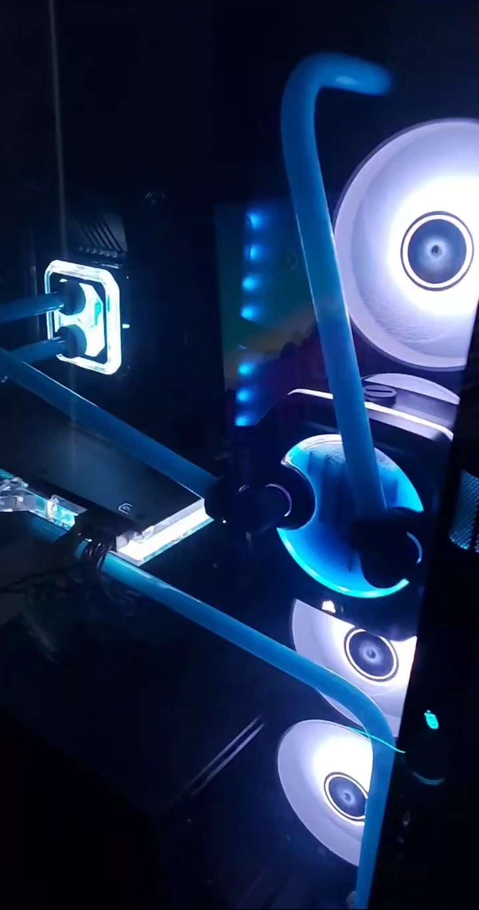
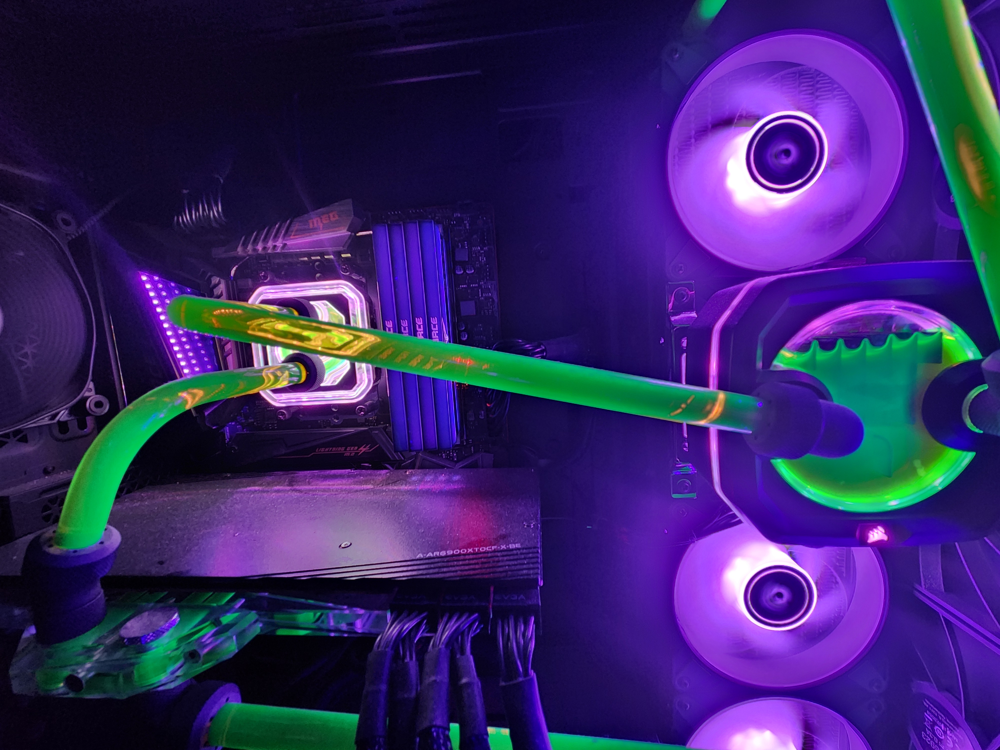

My brother-in-law introduced me and helped me build all of these computers.
This is what got me into the tech field in the first place.
Unfortunately, I did not document my first build.
Specs: GPU: NVIDIA 1660 Super, CPU i5-6600k
This was my first build where I actually payed attention and started to become interested.
Specs: GPU: AMD 5700XT SAPPHIRE, CPU i7-9700k
This build was one of my favorites. This was a custom built water loop by my brother-in-law.
Specs: GPU: AMD 6800XT, CPU AMD Ryzen R7 5800x3d
My first time building a pc completely by myself. We called it the scrap pc for obvious reasons.
Specs: GPU: NVIDIA 1660 Super, CPU i5-6600k
The 6900xt was the first 'amazing' card that I ever had. I've been using it ever since!
Specs: GPU: AMD 6900xt, CPU R7 5800x3d
Same build as the last, however, we added some UV lights and green liquid instead of blue.
Specs: GPU: AMD 6900xt, CPU R7 5800x3d
Once again, same build as the last. However, we went back to air cooling because I was moving all over.
Specs: GPU: AMD 6900xt, CPU R7 5800x3d